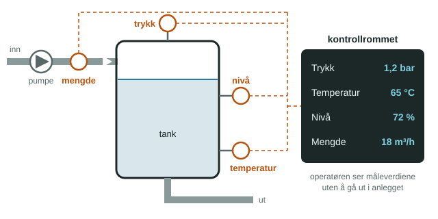

Hvorfor vi måler
Du kan ikke se inn i en lukket tank eller et rør. Likevel må du vite hva som skjer der inne. Måleinstrumentene er øynene dine i anlegget. Her lærer du hvorfor vi måler, hvilke fire størrelser vi måler mest, og hvorfor du ikke alltid kan stole blindt på en måling.
Øynene i anlegget
Et prosessanlegg er fullt av tanker, rør, pumper og varmevekslere. Det meste er lukket, og mye er varmt, under trykk eller inneholder farlige kjemikalier. Du kan ikke åpne en tank for å se hvor full den er, eller kjenne på et rør for å finne temperaturen.
Derfor er anlegget fullt av måleinstrumenter. Et måleinstrument måler en størrelse i prosessen og viser verdien. Det tallet instrumentet viser akkurat nå, kaller vi måleverdien.
De fire viktigste målingene
Det finnes mange slags målinger, men fire går igjen overalt i prosessindustrien:

| Måling | Hva vi vil vite | Vanlig enhet | Eksempel |
|---|---|---|---|
| Trykk | Hvor hardt gass eller væske presser på veggene | bar | Trykket i en reaktor eller etter en pumpe |
| Temperatur | Hvor varmt eller kaldt stoffet er | °C | Temperaturen i en reaktor eller ut av en varmeveksler |
| Nivå | Hvor høyt væsken står i en tank | % eller m | Hvor full en lagertank er |
| Mengde | Hvor mye som strømmer gjennom et rør per tid | m³/h eller kg/h | Hvor mye råstoff som pumpes inn i en reaktor |
Hva trykk og temperatur er, lærer du i Fysiske prinsipper, på sidene Kraft og trykk og Temperatur og varme. Mengde kalles også strømning, se Strømning i rør. Mengde i m³/h kalles volumstrøm, og mengde i kg/h kalles massestrøm. Hvordan hver av de fire målingene gjøres i anlegget, lærer du på de neste sidene i dette emnet.
Hvorfor måler vi?
Det er fem hovedgrunner til at et anlegg trenger målinger:
- Sikkerhet. For høyt trykk kan sprenge en tank. En tank som går full, kan flyte over med kjemikalier. Målinger varsler før det går galt.
- Kvalitet. Produktet blir bare riktig hvis temperatur, trykk og mengder er riktige. En reaksjon som går ved feil temperatur, kan gi et annet produkt eller mer avfall.
- Økonomi og energi. Råstoff og energi koster penger. Målinger viser om du bruker mer enn du trenger, for eksempel om en varmeveksler bruker mer damp enn den skal.
- Miljø. Bedriften har krav til hvor mye den kan slippe ut. Utslippene må måles for å vise at kravene holdes.
- Dokumentasjon. Måleverdiene lagres. Da kan du se i ettertid hva som skjedde, for eksempel når en feil startet.
Fra måling til handling
En måling er bare nyttig hvis noen bruker den. Det kan skje på to måter:
- Operatøren ser måleverdien og gjør noe, for eksempel starter en pumpe eller åpner en ventil.
- Styresystemet gjør det automatisk. Det sammenligner måleverdien med den verdien prosessen skal holde, og justerer selv. Dette lærer du mer om i emnene Styring og Regulering.
Uten en riktig måling blir begge deler feil. Et styresystem som får en feil måleverdi, justerer prosessen i feil retning, og det gjør det helt uten å vite om det.
Lokal måler og måling i kontrollrommet
Noen målere viser verdien bare der de sitter. En lokal måler kan være et manometer med viser, et termometer eller et seglass på siden av en tank. Du må gå ut i anlegget for å lese av.
Andre måleinstrumenter sender måleverdien som et signal til styresystemet. Da kan operatøren se verdien på skjermen i kontrollrommet, slik figuren over viser. Hvordan signalet sendes, lærer du i emnet Signaler og instrumentering.
Mange steder er det begge deler. Den lokale måleren er nyttig når du går runde i anlegget, og den kan brukes til å sjekke om tallet på skjermen er rimelig.
Kan du stole på målingen?
Et måleinstrument kan vise feil. Det kan skyldes at
- instrumentet er skittent eller har fått belegg
- et tynt rør inn til måleren er tett
- instrumentet har begynt å vise litt for høyt eller litt for lavt over tid
- verdien er utenfor det området instrumentet kan måle
- instrumentet er ødelagt, eller ledningen til det er brutt
Hvert instrument har et måleområde, for eksempel 0–10 bar. Utenfor måleområdet blir målingen upålitelig. Et instrument som står fast på høyeste eller laveste verdi, kan bety at noe er feil med instrumentet.
For at målingene skal være riktige, sammenlignes instrumentene jevnlig med en kjent standard, altså en måler vi vet viser riktig. Det kalles kalibrering. Viser instrumentet feil, blir det justert eller byttet.
En lagertank fylles fra en pumpe. På skjermen står nivået stille på 60 %, og operatøren tror det er god plass. Men nivåmåleren har satt seg fast. I virkeligheten stiger væsken, og til slutt renner den over gjennom luftingen på toppen av tanken.
Hva kunne vært gjort?
- Et nivå som står helt stille mens tanken fylles, er mistenkelig. Sammenlign med noe annet: Pumpa går, og mengdemåleren viser at det strømmer væske inn. Da må nivået stige.
- Sjekk den lokale måleren eller seglasset hvis tanken har det.
- Mange tanker har derfor et eget høynivåvern ved siden av nivåmåleren. Det stopper pumpa hvis nivået blir for høyt, selv om nivåmåleren viser feil.
Se på flere målinger samtidig. Henger de sammen? Hvis det pumpes inn i en tank og ingenting går ut, skal nivået stige. Hvis en varmeveksler får mer damp, skal temperaturen på produktet ut av den øke. Passer ikke tallene sammen, kan det være en målefeil.
- Stol ikke blindt på én måling. Ser noe rart ut, sjekk med en annen måler eller gå ut og se.
- Meld fra om instrumenter som viser feil, også når anlegget ser ut til å gå fint. En feil måler kan bli farlig neste gang.
- Koble aldri ut eller overstyr en måling eller en alarm uten tillatelse etter bedriftens prosedyre.
Test deg selv
Hva er de fire målingene som går igjen overalt i prosessindustrien?
- Masse, volum, tetthet og farge
- Trykk, temperatur, nivå og mengde
- Spenning, strøm, effekt og energi
Trykk, temperatur, nivå og mengde (strømning) måles i nesten alle prosessanlegg. Hver av dem får sin egen side i dette emnet.
Du vil vite hvor mye råstoff som pumpes inn i en reaktor per time. Hvilken måling trenger du?
- Nivåmåling
- Trykkmåling
- Mengdemåling
Mengdemåling viser hvor mye som strømmer gjennom et rør per tid, for eksempel i m³/h eller kg/h.
Hva er en lokal måler?
- En måler som bare brukes på laben
- En måler som viser verdien der den sitter i anlegget
- En måler som sender verdien til kontrollrommet
En lokal måler, for eksempel et manometer eller et seglass, må leses av på stedet. Den sender ikke noe signal til kontrollrommet.
En tank fylles, men nivået på skjermen står helt stille. Hva bør du tenke først?
- Tanken er sikkert stor, så det tar tid før nivået endrer seg.
- Nivåmåleren kan vise feil. Sjekk med en annen måler eller gå ut og se.
- Pumpen må være stoppet, selv om den ser ut til å gå.
Når det strømmer væske inn, må nivået stige. Står det helt stille, kan måleren ha satt seg fast. Sammenlign med en annen måling, for eksempel mengdemåleren eller seglasset.
Hva betyr det å kalibrere et instrument?
- Å bytte instrumentet med et nytt
- Å rengjøre instrumentet
- Å sammenligne instrumentet med en kjent standard og justere det ved behov
Ved kalibrering sammenligner du instrumentet med en kjent standard, altså en måler du vet viser riktig. Viser det feil, justeres det. Hjelper ikke det, byttes det.
Ordliste
| Begrep | Forklaring | Engelsk |
|---|---|---|
| måleinstrument | Utstyr som måler en størrelse i prosessen, for eksempel trykk eller temperatur, og viser eller sender verdien. | measuring instrument |
| måleverdi | Verdien instrumentet faktisk måler i prosessen akkurat nå. | process value (PV) |
| nivå | Hvor høyt væsken står i en tank. Oppgis ofte i prosent av full tank eller i meter. | level |
| mengde | Hvor mye væske eller gass som strømmer gjennom et rør per tid, for eksempel i m³/h eller kg/h. Kalles også strømning. | flow |
| lokal måler | Måler som bare viser verdien der den sitter i anlegget, for eksempel et manometer eller et seglass. | local gauge |
| seglass | Glassrør eller vindu på siden av en tank der du kan se hvor høyt væsken står. | sight glass |
| måleområde | Området mellom laveste og høyeste verdi et instrument kan måle, for eksempel 0–10 bar. | measuring range |
| kalibrering | Å sammenligne et instrument med en kjent standard og justere det ved behov, slik at det måler riktig. | calibration |
| høynivåvern | En nivåbryter høyt oppe i en tank som stopper fyllingen før tanken blir overfylt. | high level switch |
Les mer
- Kraft og trykk, Temperatur og varme og Strømning i rør i Fysiske prinsipper forklarer størrelsene vi måler.
Om kildene: Teksten, eksemplene og figuren på denne siden er laget for dette nettstedet. Siden bygger på undervisningsopplegg i kjemiprosess- og laboratoriefag ved Sauda vgs, som er utarbeidet med utgangspunkt i blant annet Kjemien stemmer, Laboranten og åpne nettkilder.